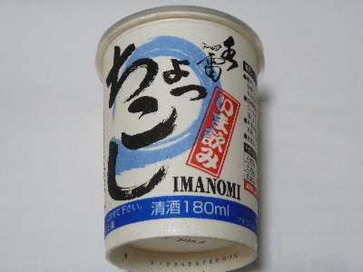

稲田本店のちょっこし いま飲み
2018/07/29
青いパッケージがちょっと夏っぽいかな。 稲田本店の水雷ワンカップです。

飲んだ時の口あたりが水みたいに軽かったです。その後、味が広がりました。その後のあと味はサッパリしてました。
軽くて後を引かないのでドンドン飲めそうな気がしました。（実際には1杯しか買っていないのでドンドン飲んでいません。）
鳥取県米子市夜見町325-16
2018/07/29
青いパッケージがちょっと夏っぽいかな。 稲田本店の水雷ワンカップです。

飲んだ時の口あたりが水みたいに軽かったです。その後、味が広がりました。その後のあと味はサッパリしてました。
軽くて後を引かないのでドンドン飲めそうな気がしました。（実際には1杯しか買っていないのでドンドン飲んでいません。）